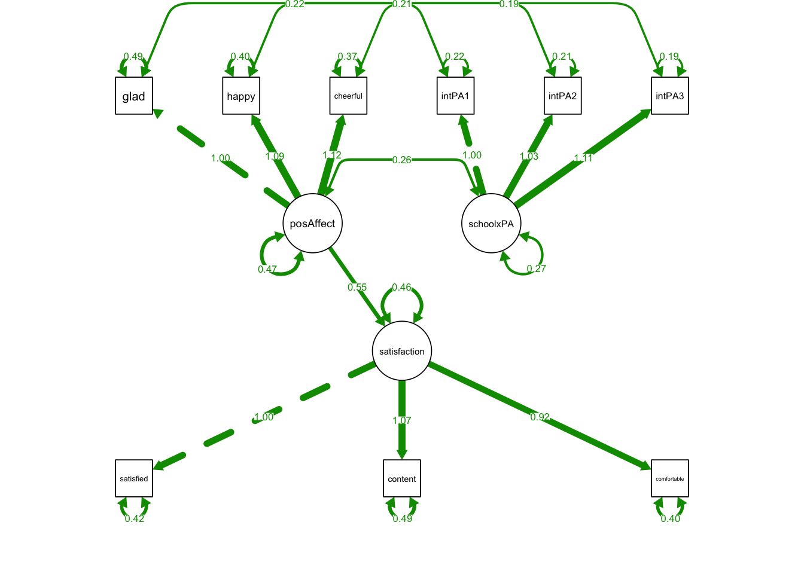
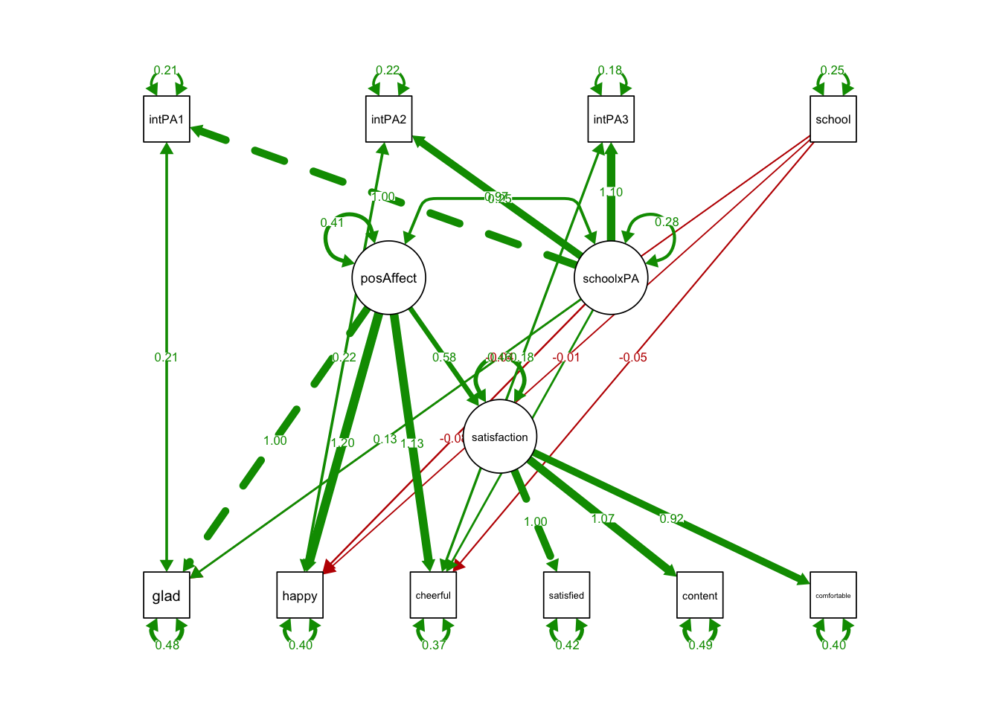
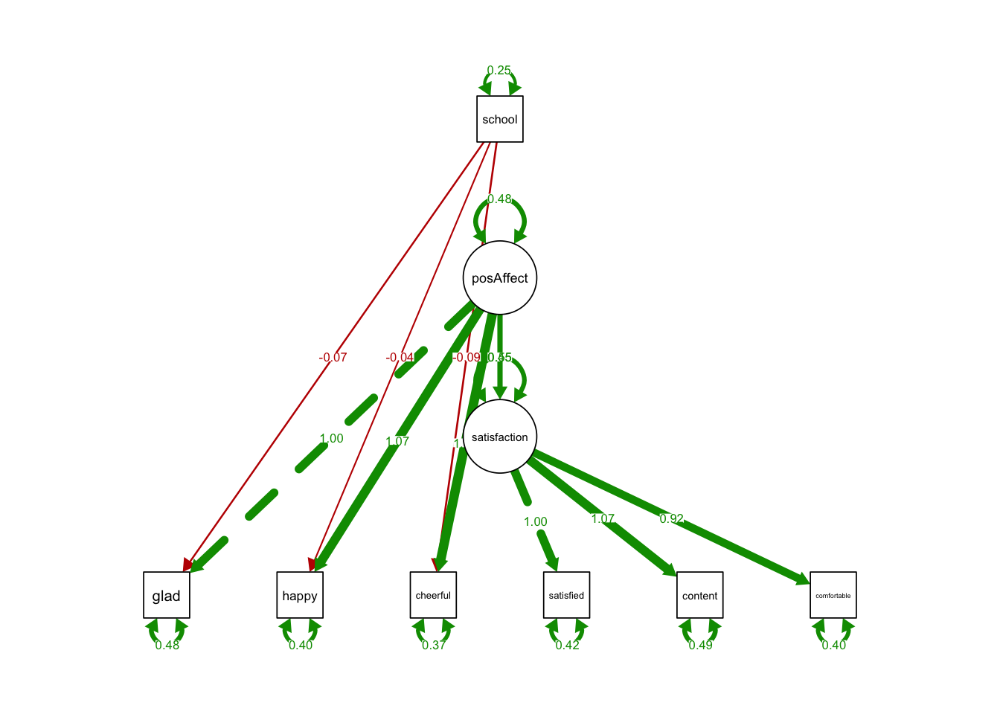
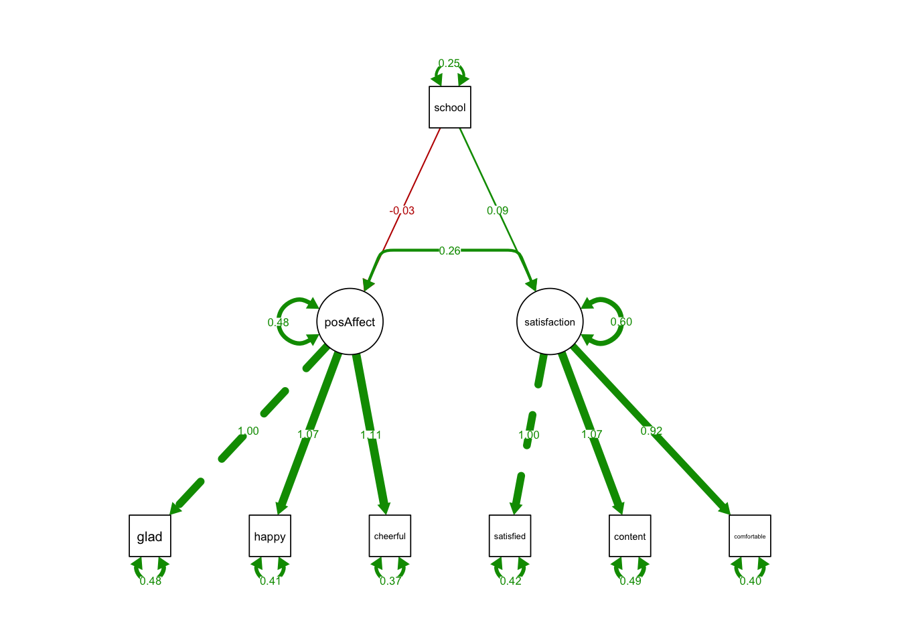

Chapter 18 Week13_2: Lavaan Lab 15 MIMIC & Longitudinal Invariance
- For this lab, we will run Partial Invariance Test and MIMIC Models using simulated data based on Todd Little’s positive affect example.
- We will also test longitudinal measurement invariance using a longitudinal dataset from semTools
Load up the lavaan library:
library(lavaan)and the dataset:
affectData <- read.csv("cfaInclassData.csv", header = T)For demonstration purposes, let’s first simulate a grouping variable called school:
set.seed(555)
affectData$school = sample(c('public', 'private'), nrow(affectData), replace = T)18.1 PART I: Partial Invariance
Suppose that you do not need:
- the loading of content on satisfaction
- the intercept of content
to be equal across groups, you can use group.partial= to relax them:
- “satisfaction=~content”: factor loading of content on satisfaction
- “content~1”: intercept of indicator content
srSyntax <- "
posAffect =~ glad + happy + cheerful
satisfaction =~ satisfied + content + comfortable
# Structural Regression: beta
satisfaction ~ posAffect
"PartialInvFit <- lavaan::sem(srSyntax,
data = affectData,
fixed.x=FALSE,
estimator = 'MLR',
group = "school",
group.equal = c("loadings", "intercepts", "residuals"),
group.partial = c("satisfaction=~content", "content~1"))
summary(PartialInvFit, standardized = T, fit.measures = T)## lavaan 0.6-12 ended normally after 33 iterations
##
## Estimator ML
## Optimization method NLMINB
## Number of model parameters 40
## Number of equality constraints 14
##
## Number of observations per group:
## private 513
## public 487
##
## Model Test User Model:
## Standard Robust
## Test Statistic 25.622 25.620
## Degrees of freedom 28 28
## P-value (Chi-square) 0.594 0.594
## Scaling correction factor 1.000
## Yuan-Bentler correction (Mplus variant)
## Test statistic for each group:
## private 10.914 10.913
## public 14.708 14.707
##
## Model Test Baseline Model:
##
## Test statistic 2038.064 2039.295
## Degrees of freedom 30 30
## P-value 0.000 0.000
## Scaling correction factor 0.999
##
## User Model versus Baseline Model:
##
## Comparative Fit Index (CFI) 1.000 1.000
## Tucker-Lewis Index (TLI) 1.001 1.001
##
## Robust Comparative Fit Index (CFI) 1.000
## Robust Tucker-Lewis Index (TLI) 1.001
##
## Loglikelihood and Information Criteria:
##
## Loglikelihood user model (H0) -7479.853 -7479.853
## Scaling correction factor 0.658
## for the MLR correction
## Loglikelihood unrestricted model (H1) -7467.042 -7467.042
## Scaling correction factor 1.006
## for the MLR correction
##
## Akaike (AIC) 15011.706 15011.706
## Bayesian (BIC) 15139.308 15139.308
## Sample-size adjusted Bayesian (BIC) 15056.730 15056.730
##
## Root Mean Square Error of Approximation:
##
## RMSEA 0.000 0.000
## 90 Percent confidence interval - lower 0.000 0.000
## 90 Percent confidence interval - upper 0.031 0.031
## P-value RMSEA <= 0.05 1.000 1.000
##
## Robust RMSEA 0.000
## 90 Percent confidence interval - lower 0.000
## 90 Percent confidence interval - upper 0.031
##
## Standardized Root Mean Square Residual:
##
## SRMR 0.021 0.021
##
## Parameter Estimates:
##
## Standard errors Sandwich
## Information bread Observed
## Observed information based on Hessian
##
##
## Group 1 [private]:
##
## Latent Variables:
## Estimate Std.Err z-value P(>|z|) Std.lv
## posAffect =~
## glad 1.000 0.713
## happy (.p2.) 1.063 0.054 19.642 0.000 0.758
## cheerfl (.p3.) 1.114 0.055 20.243 0.000 0.794
## satisfaction =~
## satisfd 1.000 0.769
## content 1.111 0.068 16.370 0.000 0.855
## cmfrtbl (.p6.) 0.917 0.044 20.985 0.000 0.705
## Std.all
##
## 0.716
## 0.765
## 0.794
##
## 0.765
## 0.774
## 0.744
##
## Regressions:
## Estimate Std.Err z-value P(>|z|) Std.lv
## satisfaction ~
## posAffect 0.529 0.064 8.286 0.000 0.491
## Std.all
##
## 0.491
##
## Intercepts:
## Estimate Std.Err z-value P(>|z|) Std.lv
## .glad (.16.) 0.018 0.040 0.443 0.658 0.018
## .happy (.17.) 0.026 0.040 0.650 0.516 0.026
## .cheerfl (.18.) 0.018 0.042 0.415 0.678 0.018
## .satisfd (.19.) -0.083 0.043 -1.949 0.051 -0.083
## .content -0.086 0.049 -1.754 0.079 -0.086
## .cmfrtbl (.21.) -0.080 0.039 -2.058 0.040 -0.080
## psAffct 0.000 0.000
## .stsfctn 0.000 0.000
## Std.all
## 0.018
## 0.026
## 0.018
## -0.083
## -0.078
## -0.085
## 0.000
## 0.000
##
## Variances:
## Estimate Std.Err z-value P(>|z|) Std.lv
## .glad (.p8.) 0.483 0.028 17.129 0.000 0.483
## .happy (.p9.) 0.408 0.029 14.225 0.000 0.408
## .cheerfl (.10.) 0.369 0.028 13.205 0.000 0.369
## .satisfd (.11.) 0.418 0.029 14.671 0.000 0.418
## .content (.12.) 0.489 0.034 14.487 0.000 0.489
## .cmfrtbl (.13.) 0.401 0.027 14.951 0.000 0.401
## psAffct 0.509 0.051 9.913 0.000 1.000
## .stsfctn 0.449 0.052 8.611 0.000 0.759
## Std.all
## 0.487
## 0.415
## 0.369
## 0.414
## 0.401
## 0.446
## 1.000
## 0.759
##
##
## Group 2 [public]:
##
## Latent Variables:
## Estimate Std.Err z-value P(>|z|) Std.lv
## posAffect =~
## glad 1.000 0.674
## happy (.p2.) 1.063 0.054 19.642 0.000 0.716
## cheerfl (.p3.) 1.114 0.055 20.243 0.000 0.750
## satisfaction =~
## satisfd 1.000 0.775
## content 1.024 0.059 17.424 0.000 0.793
## cmfrtbl (.p6.) 0.917 0.044 20.985 0.000 0.710
## Std.all
##
## 0.696
## 0.746
## 0.777
##
## 0.768
## 0.750
## 0.746
##
## Regressions:
## Estimate Std.Err z-value P(>|z|) Std.lv
## satisfaction ~
## posAffect 0.563 0.067 8.357 0.000 0.489
## Std.all
##
## 0.489
##
## Intercepts:
## Estimate Std.Err z-value P(>|z|) Std.lv
## .glad (.16.) 0.018 0.040 0.443 0.658 0.018
## .happy (.17.) 0.026 0.040 0.650 0.516 0.026
## .cheerfl (.18.) 0.018 0.042 0.415 0.678 0.018
## .satisfd (.19.) -0.083 0.043 -1.949 0.051 -0.083
## .content -0.072 0.056 -1.276 0.202 -0.072
## .cmfrtbl (.21.) -0.080 0.039 -2.058 0.040 -0.080
## psAffct -0.034 0.049 -0.693 0.488 -0.051
## .stsfctn 0.101 0.054 1.862 0.063 0.130
## Std.all
## 0.018
## 0.027
## 0.018
## -0.082
## -0.068
## -0.085
## -0.051
## 0.130
##
## Variances:
## Estimate Std.Err z-value P(>|z|) Std.lv
## .glad (.p8.) 0.483 0.028 17.129 0.000 0.483
## .happy (.p9.) 0.408 0.029 14.225 0.000 0.408
## .cheerfl (.10.) 0.369 0.028 13.205 0.000 0.369
## .satisfd (.11.) 0.418 0.029 14.671 0.000 0.418
## .content (.12.) 0.489 0.034 14.487 0.000 0.489
## .cmfrtbl (.13.) 0.401 0.027 14.951 0.000 0.401
## psAffct 0.454 0.050 9.153 0.000 1.000
## .stsfctn 0.456 0.050 9.162 0.000 0.760
## Std.all
## 0.516
## 0.443
## 0.396
## 0.411
## 0.437
## 0.443
## 1.000
## 0.760- The overall model seems to be fine, so we can safely assume these two parameters can be freed across group;
- Technically you want to compare PartialInvFit to resVarFit from last lab
18.2 PART II: MIMIC
To test whether the grouping variable school affects the loadings (i.e., metric invariance), school has to first interact with PA and predict the indicators:
This is easily said than done. To create such an interaction, we first need to create indicators of the latent interaction by multiplying school with each of the indicators of PA:
# first convert public/private to 0/1
affectData$school_N = ifelse(affectData$school=='public', 0, 1)
affectData$intPA1 = affectData$school_N * affectData$glad
affectData$intPA2 = affectData$school_N * affectData$happy
affectData$intPA3 = affectData$school_N * affectData$cheerful18.2.1 Test Metric Invariance
Now that we have our latent interaction indicators ready, we can run our MIMIC analyses by testing:
srSyntaxMIMIC0 <- "
posAffect =~ glad + happy + cheerful
satisfaction =~ satisfied + content + comfortable
schoolxPA =~ intPA1 + intPA2 + intPA3
# Structural Regression: beta
satisfaction ~ posAffect
# Correlated Residuals:
intPA1 ~~ glad
intPA2 ~~ happy
intPA3 ~~ cheerful
"MIMICmodel <- lavaan::sem(srSyntaxMIMIC0,
data = affectData,
fixed.x=FALSE,
estimator = 'MLR') library(semPlot)
semPaths(MIMICmodel, what='est',
nCharNodes = 0,
nCharEdges = 0, # don't limit variable name lengths
edge.label.cex=0.6,
curvePivot = TRUE,
curve = 1.5, # pull covariances' curves out a little
fade=FALSE)
srSyntaxMIMICLoading <- "
posAffect =~ glad + happy + cheerful
satisfaction =~ satisfied + content + comfortable
schoolxPA =~ intPA1 + intPA2 + intPA3
# Structural Regression: beta
satisfaction ~ posAffect
# Correlated Residuals:
intPA1 ~~ glad
intPA2 ~~ happy
intPA3 ~~ cheerful
# Test Metric Invariance
glad ~ school + schoolxPA
happy ~ school + schoolxPA
cheerful ~ school + schoolxPA
"Note that you don’t need group=, group.equal=, or group.partial= in the following function (why?):
MIMICloading <- lavaan::sem(srSyntaxMIMICLoading,
data = affectData,
fixed.x=FALSE,
estimator = 'MLR') ## Warning in lav_model_vcov(lavmodel = lavmodel, lavsamplestats = lavsamplestats, : lavaan WARNING:
## The variance-covariance matrix of the estimated parameters (vcov)
## does not appear to be positive definite! The smallest eigenvalue
## (= 3.538210e-14) is close to zero. This may be a symptom that the
## model is not identified.summary(MIMICloading, standardized = T, fit.measures = T)## lavaan 0.6-12 ended normally after 52 iterations
##
## Estimator ML
## Optimization method NLMINB
## Number of model parameters 30
##
## Number of observations 1000
##
## Model Test User Model:
## Standard Robust
## Test Statistic 18.095 20.392
## Degrees of freedom 25 25
## P-value (Chi-square) 0.838 0.726
## Scaling correction factor 0.887
## Yuan-Bentler correction (Mplus variant)
##
## Model Test Baseline Model:
##
## Test statistic 5166.260 4938.018
## Degrees of freedom 45 45
## P-value 0.000 0.000
## Scaling correction factor 1.046
##
## User Model versus Baseline Model:
##
## Comparative Fit Index (CFI) 1.000 1.000
## Tucker-Lewis Index (TLI) 1.002 1.002
##
## Robust Comparative Fit Index (CFI) 1.000
## Robust Tucker-Lewis Index (TLI) 1.001
##
## Loglikelihood and Information Criteria:
##
## Loglikelihood user model (H0) -9863.278 -9863.278
## Scaling correction factor 1.267
## for the MLR correction
## Loglikelihood unrestricted model (H1) NA NA
## Scaling correction factor 1.094
## for the MLR correction
##
## Akaike (AIC) 19786.556 19786.556
## Bayesian (BIC) 19933.789 19933.789
## Sample-size adjusted Bayesian (BIC) 19838.507 19838.507
##
## Root Mean Square Error of Approximation:
##
## RMSEA 0.000 0.000
## 90 Percent confidence interval - lower 0.000 0.000
## 90 Percent confidence interval - upper 0.015 0.020
## P-value RMSEA <= 0.05 1.000 1.000
##
## Robust RMSEA 0.000
## 90 Percent confidence interval - lower 0.000
## 90 Percent confidence interval - upper 0.018
##
## Standardized Root Mean Square Residual:
##
## SRMR 0.014 0.014
##
## Parameter Estimates:
##
## Standard errors Sandwich
## Information bread Observed
## Observed information based on Hessian
##
## Latent Variables:
## Estimate Std.Err z-value P(>|z|) Std.lv
## posAffect =~
## glad 1.000 0.644
## happy 1.198 0.093 12.844 0.000 0.772
## cheerful 1.130 0.091 12.420 0.000 0.728
## satisfaction =~
## satisfied 1.000 0.773
## content 1.068 0.051 21.114 0.000 0.826
## comfortable 0.917 0.043 21.150 0.000 0.709
## schoolxPA =~
## intPA1 1.000 0.531
## intPA2 0.968 0.065 14.944 0.000 0.514
## intPA3 1.104 0.068 16.157 0.000 0.587
## Std.all
##
## 0.655
## 0.791
## 0.740
##
## 0.767
## 0.763
## 0.746
##
## 0.755
## 0.739
## 0.809
##
## Regressions:
## Estimate Std.Err z-value P(>|z|) Std.lv
## satisfaction ~
## posAffect 0.583 0.073 7.942 0.000 0.485
## glad ~
## school -0.038 0.043 -0.869 0.385 -0.038
## schoolxPA 0.129 0.147 0.874 0.382 0.068
## happy ~
## school -0.014 0.043 -0.325 0.745 -0.014
## schoolxPA -0.081 0.177 -0.457 0.648 -0.043
## cheerful ~
## school -0.048 0.042 -1.150 0.250 -0.048
## schoolxPA 0.118 0.173 0.681 0.496 0.063
## Std.all
##
## 0.485
##
## -0.019
## 0.070
##
## -0.007
## -0.044
##
## -0.024
## 0.064
##
## Covariances:
## Estimate Std.Err z-value P(>|z|) Std.lv
## .glad ~~
## .intPA1 0.212 0.020 10.526 0.000 0.212
## .happy ~~
## .intPA2 0.219 0.021 10.685 0.000 0.219
## .cheerful ~~
## .intPA3 0.181 0.020 9.130 0.000 0.181
## posAffect ~~
## schoolxPA 0.246 0.046 5.349 0.000 0.720
## Std.all
##
## 0.662
##
## 0.738
##
## 0.703
##
## 0.720
##
## Variances:
## Estimate Std.Err z-value P(>|z|) Std.lv
## .glad 0.482 0.028 17.094 0.000 0.482
## .happy 0.401 0.029 14.007 0.000 0.401
## .cheerful 0.368 0.027 13.445 0.000 0.368
## .satisfied 0.418 0.028 14.724 0.000 0.418
## .content 0.491 0.034 14.594 0.000 0.491
## .comfortable 0.401 0.027 14.960 0.000 0.401
## .intPA1 0.213 0.020 10.602 0.000 0.213
## .intPA2 0.219 0.021 10.598 0.000 0.219
## .intPA3 0.181 0.020 9.136 0.000 0.181
## posAffect 0.415 0.085 4.888 0.000 1.000
## .satisfaction 0.457 0.039 11.610 0.000 0.764
## schoolxPA 0.282 0.032 8.881 0.000 1.000
## school 0.250 0.000 607.925 0.000 0.250
## Std.all
## 0.499
## 0.422
## 0.380
## 0.412
## 0.418
## 0.444
## 0.430
## 0.454
## 0.345
## 1.000
## 0.764
## 1.000
## 1.000semPaths(MIMICloading, what='est',
nCharNodes = 0,
nCharEdges = 0, # don't limit variable name lengths
edge.label.cex=0.6,
curvePivot = TRUE,
curve = 1.5, # pull covariances' curves out a little
fade=FALSE)
Regressions:
Estimate Std.Err z-value P(>|z|) Std.lv Std.all
satisfaction ~
posAffect 0.583 0.073 7.942 0.000 0.485 0.485
glad ~
school -0.038 0.043 -0.869 0.385 -0.038 -0.019
schoolxPA 0.129 0.147 0.874 0.382 0.068 0.070
happy ~
school -0.014 0.043 -0.325 0.745 -0.014 -0.007
schoolxPA -0.081 0.177 -0.457 0.648 -0.043 -0.044
cheerful ~
school -0.048 0.042 -1.150 0.250 -0.048 -0.024
schoolxPA 0.118 0.173 0.681 0.496 0.063 0.064- The coefficient of schoolxPA on all indicators were insignificant.
- The loadings do not depend on school type.
- No sign of violation of metric invariance.
18.2.2 Test Scalar Invariance
Since metric invariance has been established, we do not need the indicators of the latent interactions, we simply predict each of the indicators using group:
srSyntaxMIMICInt <- "
posAffect =~ glad + happy + cheerful
satisfaction =~ satisfied + content + comfortable
# Structural Regression: beta
satisfaction ~ posAffect
# Test Scalar Invariance
glad ~ school
happy ~ school
cheerful ~ school
"MIMICintercept <- lavaan::sem(srSyntaxMIMICInt,
data = affectData,
fixed.x=FALSE,
estimator = 'MLR') semPaths(MIMICintercept, what='est',
nCharNodes = 0,
nCharEdges = 0, # don't limit variable name lengths
edge.label.cex=0.6,
curvePivot = TRUE,
curve = 1.5, # pull covariances' curves out a little
fade=FALSE)
summary(MIMICintercept, standardized = T, fit.measures = T)## lavaan 0.6-12 ended normally after 24 iterations
##
## Estimator ML
## Optimization method NLMINB
## Number of model parameters 17
##
## Number of observations 1000
##
## Model Test User Model:
## Standard Robust
## Test Statistic 7.345 7.230
## Degrees of freedom 11 11
## P-value (Chi-square) 0.770 0.780
## Scaling correction factor 1.016
## Yuan-Bentler correction (Mplus variant)
##
## Model Test Baseline Model:
##
## Test statistic 2027.246 2025.669
## Degrees of freedom 21 21
## P-value 0.000 0.000
## Scaling correction factor 1.001
##
## User Model versus Baseline Model:
##
## Comparative Fit Index (CFI) 1.000 1.000
## Tucker-Lewis Index (TLI) 1.003 1.004
##
## Robust Comparative Fit Index (CFI) 1.000
## Robust Tucker-Lewis Index (TLI) 1.004
##
## Loglikelihood and Information Criteria:
##
## Loglikelihood user model (H0) -8207.301 -8207.301
## Scaling correction factor 0.942
## for the MLR correction
## Loglikelihood unrestricted model (H1) NA NA
## Scaling correction factor 0.971
## for the MLR correction
##
## Akaike (AIC) 16448.602 16448.602
## Bayesian (BIC) 16532.034 16532.034
## Sample-size adjusted Bayesian (BIC) 16478.041 16478.041
##
## Root Mean Square Error of Approximation:
##
## RMSEA 0.000 0.000
## 90 Percent confidence interval - lower 0.000 0.000
## 90 Percent confidence interval - upper 0.023 0.022
## P-value RMSEA <= 0.05 1.000 1.000
##
## Robust RMSEA 0.000
## 90 Percent confidence interval - lower 0.000
## 90 Percent confidence interval - upper 0.023
##
## Standardized Root Mean Square Residual:
##
## SRMR 0.017 0.017
##
## Parameter Estimates:
##
## Standard errors Sandwich
## Information bread Observed
## Observed information based on Hessian
##
## Latent Variables:
## Estimate Std.Err z-value P(>|z|) Std.lv
## posAffect =~
## glad 1.000 0.694
## happy 1.067 0.054 19.752 0.000 0.740
## cheerful 1.112 0.055 20.188 0.000 0.772
## satisfaction =~
## satisfied 1.000 0.773
## content 1.068 0.051 21.122 0.000 0.826
## comfortable 0.917 0.043 21.166 0.000 0.709
## Std.all
##
## 0.706
## 0.758
## 0.784
##
## 0.767
## 0.763
## 0.746
##
## Regressions:
## Estimate Std.Err z-value P(>|z|) Std.lv
## satisfaction ~
## posAffect 0.547 0.049 11.250 0.000 0.491
## glad ~
## school -0.075 0.059 -1.268 0.205 -0.075
## happy ~
## school -0.039 0.058 -0.664 0.507 -0.039
## cheerful ~
## school -0.090 0.058 -1.542 0.123 -0.090
## Std.all
##
## 0.491
##
## -0.038
##
## -0.020
##
## -0.046
##
## Variances:
## Estimate Std.Err z-value P(>|z|) Std.lv
## .glad 0.484 0.028 17.143 0.000 0.484
## .happy 0.405 0.028 14.280 0.000 0.405
## .cheerful 0.371 0.028 13.437 0.000 0.371
## .satisfied 0.418 0.028 14.740 0.000 0.418
## .content 0.491 0.034 14.615 0.000 0.491
## .comfortable 0.401 0.027 14.993 0.000 0.401
## posAffect 0.481 0.042 11.547 0.000 1.000
## .satisfaction 0.454 0.039 11.629 0.000 0.759
## school 0.250 0.000 607.925 0.000 0.250
## Std.all
## 0.501
## 0.425
## 0.383
## 0.412
## 0.419
## 0.444
## 1.000
## 0.759
## 1.000- The coefficient of school on all indicators were insignificant.
- The intercepts of indicators do not depend on school type.
- No sign of violation of scalar invariance.
18.2.3 Test The Hypothesis of Equal Factor Means:
cfaSyntaxMIMIC <- "
posAffect =~ glad + happy + cheerful
satisfaction =~ satisfied + content + comfortable
# Test Equal Factor Means
posAffect ~ school
satisfaction ~ school
"MIMICmean <- lavaan::sem(cfaSyntaxMIMIC,
data = affectData,
fixed.x=FALSE,
estimator = 'MLR')
summary(MIMICmean, standardized = T, fit.measures = T)## lavaan 0.6-12 ended normally after 26 iterations
##
## Estimator ML
## Optimization method NLMINB
## Number of model parameters 16
##
## Number of observations 1000
##
## Model Test User Model:
## Standard Robust
## Test Statistic 5.758 5.670
## Degrees of freedom 12 12
## P-value (Chi-square) 0.928 0.932
## Scaling correction factor 1.015
## Yuan-Bentler correction (Mplus variant)
##
## Model Test Baseline Model:
##
## Test statistic 2027.246 2025.669
## Degrees of freedom 21 21
## P-value 0.000 0.000
## Scaling correction factor 1.001
##
## User Model versus Baseline Model:
##
## Comparative Fit Index (CFI) 1.000 1.000
## Tucker-Lewis Index (TLI) 1.005 1.006
##
## Robust Comparative Fit Index (CFI) 1.000
## Robust Tucker-Lewis Index (TLI) 1.006
##
## Loglikelihood and Information Criteria:
##
## Loglikelihood user model (H0) -8206.507 -8206.507
## Scaling correction factor 0.938
## for the MLR correction
## Loglikelihood unrestricted model (H1) NA NA
## Scaling correction factor 0.971
## for the MLR correction
##
## Akaike (AIC) 16445.014 16445.014
## Bayesian (BIC) 16523.538 16523.538
## Sample-size adjusted Bayesian (BIC) 16472.722 16472.722
##
## Root Mean Square Error of Approximation:
##
## RMSEA 0.000 0.000
## 90 Percent confidence interval - lower 0.000 0.000
## 90 Percent confidence interval - upper 0.010 0.009
## P-value RMSEA <= 0.05 1.000 1.000
##
## Robust RMSEA 0.000
## 90 Percent confidence interval - lower 0.000
## 90 Percent confidence interval - upper 0.009
##
## Standardized Root Mean Square Residual:
##
## SRMR 0.009 0.009
##
## Parameter Estimates:
##
## Standard errors Sandwich
## Information bread Observed
## Observed information based on Hessian
##
## Latent Variables:
## Estimate Std.Err z-value P(>|z|) Std.lv
## posAffect =~
## glad 1.000 0.694
## happy 1.066 0.054 19.687 0.000 0.740
## cheerful 1.113 0.055 20.209 0.000 0.772
## satisfaction =~
## satisfied 1.000 0.774
## content 1.067 0.051 21.069 0.000 0.826
## comfortable 0.915 0.043 21.175 0.000 0.708
## Std.all
##
## 0.706
## 0.758
## 0.785
##
## 0.768
## 0.763
## 0.745
##
## Regressions:
## Estimate Std.Err z-value P(>|z|) Std.lv
## posAffect ~
## school -0.034 0.049 -0.691 0.489 -0.049
## satisfaction ~
## school 0.085 0.055 1.559 0.119 0.110
## Std.all
##
## -0.025
##
## 0.055
##
## Covariances:
## Estimate Std.Err z-value P(>|z|) Std.lv
## .posAffect ~~
## .satisfaction 0.263 0.028 9.514 0.000 0.490
## Std.all
##
## 0.490
##
## Variances:
## Estimate Std.Err z-value P(>|z|) Std.lv
## .glad 0.484 0.028 17.137 0.000 0.484
## .happy 0.406 0.028 14.268 0.000 0.406
## .cheerful 0.370 0.028 13.396 0.000 0.370
## .satisfied 0.417 0.028 14.689 0.000 0.417
## .content 0.491 0.034 14.582 0.000 0.491
## .comfortable 0.402 0.027 15.076 0.000 0.402
## .posAffect 0.482 0.042 11.546 0.000 0.999
## .satisfaction 0.597 0.049 12.212 0.000 0.997
## school 0.250 0.000 607.925 0.000 0.250
## Std.all
## 0.501
## 0.426
## 0.383
## 0.411
## 0.418
## 0.445
## 0.999
## 0.997
## 1.000semPaths(MIMICmean, what='est',
nCharNodes = 0,
nCharEdges = 0, # don't limit variable name lengths
edge.label.cex=0.6,
curvePivot = TRUE,
curve = 1.5, # pull covariances' curves out a little
fade=FALSE)
- The coefficient of school on two latent variables were insignificant.
- It says the levels of positive affect and satisfaction in public schools were essentially the same as those in private schools.
18.3 PART III: Longitudinal Invariance
The following codes were adapted from the examples of measEq.syntax() in semTools:
library(semTools)
?measEq.syntaxThey used a built-in dataset called datCat:
head(datCat)## u1 u2 u3 u4 u5 u6 u7 u8 g
## 1 3 3 2 2 3 2 2 3 male
## 2 3 2 2 2 2 3 3 2 male
## 3 3 2 3 1 4 3 3 3 male
## 4 1 3 2 1 3 2 2 3 male
## 5 3 4 3 4 4 4 5 3 male
## 6 3 4 3 3 4 3 2 1 male- A data.frame with 200 observations of 9 variables.
- A simulated data set with 2 factors with 4 indicators each separated into two groups
- Let’s ignore the gender groups for now
- u1-u4 are likert variables measured at time 1
- u5-u8 are the same set of likert variables measured at time 2
- Both u1-u4 and u5-u8 measure the same latent variable, FU
The goal of testing longitudinal invariance is to make sure that the scale that measures positive affect and satisfaction functions in the same way across all time points.
18.3.1 step 1: Configural invariance
First define the CFA model that measures the same latent variable (FU) at two time points:
mod.cat <- ' FU1 =~ u1 + u2 + u3 + u4
FU2 =~ u5 + u6 + u7 + u8 'It’s important to know:
- You do not want to use sem() to test longitudinal invariance (technically you can, but it’ll be very messy)
- I recommend using the function measEq.syntax() from semTools package
- To tell measEq.syntax() that FU1 are FU2 are just the same variables, you need to define a list longFacNames that includes this information
- The indicators are categorical you’ll need the ordered= argument and parameterization = “theta”
- The example codes used ID.fac = “std.lv” (fixed variance scaling) so we’ll use this as well
- return.fit = TRUE fits the model instead of just creating a model syntax
## the 2 factors are actually the same factor (FU) measured twice
longFacNames <- list(FU = c("FU1","FU2"))syntax.config <- measEq.syntax(configural.model = mod.cat,
data = datCat,
ordered = paste0("u", 1:8),
parameterization = "theta",
ID.fac = "std.lv",
longFacNames = longFacNames,
fixed.x = TRUE,
return.fit = TRUE)
#cat(as.character(syntax.config))
summary(syntax.config, standardized = T, fit.measures = T)## lavaan 0.6-12 ended normally after 43 iterations
##
## Estimator DWLS
## Optimization method NLMINB
## Number of model parameters 45
##
## Number of observations 200
##
## Model Test User Model:
## Standard Robust
## Test Statistic 11.839 19.695
## Degrees of freedom 15 15
## P-value (Chi-square) 0.691 0.184
## Scaling correction factor 0.665
## Shift parameter 1.891
## simple second-order correction
##
## Model Test Baseline Model:
##
## Test statistic 1493.667 953.386
## Degrees of freedom 28 28
## P-value 0.000 0.000
## Scaling correction factor 1.584
##
## User Model versus Baseline Model:
##
## Comparative Fit Index (CFI) 1.000 0.995
## Tucker-Lewis Index (TLI) 1.004 0.991
##
## Robust Comparative Fit Index (CFI) NA
## Robust Tucker-Lewis Index (TLI) NA
##
## Root Mean Square Error of Approximation:
##
## RMSEA 0.000 0.040
## 90 Percent confidence interval - lower 0.000 0.000
## 90 Percent confidence interval - upper 0.053 0.083
## P-value RMSEA <= 0.05 0.938 0.603
##
## Robust RMSEA NA
## 90 Percent confidence interval - lower 0.000
## 90 Percent confidence interval - upper NA
##
## Standardized Root Mean Square Residual:
##
## SRMR 0.038 0.038
##
## Parameter Estimates:
##
## Standard errors Robust.sem
## Information Expected
## Information saturated (h1) model Unstructured
##
## Latent Variables:
## Estimate Std.Err z-value P(>|z|) Std.lv
## FU1 =~
## u1 (l.1_) 1.264 0.181 6.972 0.000 1.264
## u2 (l.2_) 0.941 0.142 6.638 0.000 0.941
## u3 (l.3_) 1.053 0.141 7.472 0.000 1.053
## u4 (l.4_) 0.833 0.113 7.383 0.000 0.833
## FU2 =~
## u5 (l.5_) 1.286 0.200 6.446 0.000 1.286
## u6 (l.6_) 1.254 0.183 6.847 0.000 1.254
## u7 (l.7_) 1.142 0.167 6.822 0.000 1.142
## u8 (l.8_) 0.919 0.119 7.746 0.000 0.919
## Std.all
##
## 0.784
## 0.685
## 0.725
## 0.640
##
## 0.790
## 0.782
## 0.752
## 0.677
##
## Covariances:
## Estimate Std.Err z-value P(>|z|) Std.lv
## .u1 ~~
## .u5 (t.5_) 0.144 0.140 1.029 0.303 0.144
## .u2 ~~
## .u6 (t.6_) -0.023 0.127 -0.185 0.853 -0.023
## .u3 ~~
## .u7 (t.7_) 0.059 0.128 0.460 0.646 0.059
## .u4 ~~
## .u8 (t.8_) -0.078 0.113 -0.689 0.491 -0.078
## FU1 ~~
## FU2 (p.2_) 0.550 0.062 8.813 0.000 0.550
## Std.all
##
## 0.144
##
## -0.023
##
## 0.059
##
## -0.078
##
## 0.550
##
## Intercepts:
## Estimate Std.Err z-value P(>|z|) Std.lv
## .u1 (nu.1) 0.000 0.000
## .u2 (nu.2) 0.000 0.000
## .u3 (nu.3) 0.000 0.000
## .u4 (nu.4) 0.000 0.000
## .u5 (nu.5) 0.000 0.000
## .u6 (nu.6) 0.000 0.000
## .u7 (nu.7) 0.000 0.000
## .u8 (nu.8) 0.000 0.000
## FU1 (al.1) 0.000 0.000
## FU2 (al.2) 0.000 0.000
## Std.all
## 0.000
## 0.000
## 0.000
## 0.000
## 0.000
## 0.000
## 0.000
## 0.000
## 0.000
## 0.000
##
## Thresholds:
## Estimate Std.Err z-value P(>|z|) Std.lv
## u1|t1 (u1.1) -2.065 0.230 -8.995 0.000 -2.065
## u1|t2 (u1.2) -0.471 0.147 -3.210 0.001 -0.471
## u1|t3 (u1.3) 1.087 0.175 6.214 0.000 1.087
## u1|t4 (u1.4) 2.506 0.277 9.046 0.000 2.506
## u2|t1 (u2.1) -1.977 0.202 -9.766 0.000 -1.977
## u2|t2 (u2.2) -0.419 0.125 -3.349 0.001 -0.419
## u2|t3 (u2.3) 0.948 0.146 6.501 0.000 0.948
## u2|t4 (u2.4) 2.404 0.265 9.060 0.000 2.404
## u3|t1 (u3.1) -1.992 0.208 -9.592 0.000 -1.992
## u3|t2 (u3.2) -0.579 0.135 -4.287 0.000 -0.579
## u3|t3 (u3.3) 1.049 0.156 6.745 0.000 1.049
## u3|t4 (u3.4) 2.462 0.267 9.227 0.000 2.462
## u4|t1 (u4.1) -1.786 0.177 -10.073 0.000 -1.786
## u4|t2 (u4.2) -0.296 0.116 -2.546 0.011 -0.296
## u4|t3 (u4.3) 0.940 0.132 7.123 0.000 0.940
## u4|t4 (u4.4) 2.551 0.262 9.719 0.000 2.551
## u5|t1 (u5.1) -2.289 0.272 -8.431 0.000 -2.289
## u5|t2 (u5.2) -0.831 0.166 -5.017 0.000 -0.831
## u5|t3 (u5.3) 0.739 0.157 4.717 0.000 0.739
## u5|t4 (u5.4) 2.135 0.279 7.667 0.000 2.135
## u6|t1 (u6.1) -2.367 0.261 -9.077 0.000 -2.367
## u6|t2 (u6.2) -0.683 0.156 -4.385 0.000 -0.683
## u6|t3 (u6.3) 0.983 0.166 5.930 0.000 0.983
## u6|t4 (u6.4) 2.150 0.259 8.317 0.000 2.150
## u7|t1 (u7.1) -2.299 0.267 -8.601 0.000 -2.299
## u7|t2 (u7.2) -0.796 0.149 -5.327 0.000 -0.796
## u7|t3 (u7.3) 0.626 0.143 4.375 0.000 0.626
## u7|t4 (u7.4) 1.746 0.200 8.734 0.000 1.746
## u8|t1 (u8.1) -1.909 0.178 -10.721 0.000 -1.909
## u8|t2 (u8.2) -0.712 0.130 -5.469 0.000 -0.712
## u8|t3 (u8.3) 0.451 0.124 3.635 0.000 0.451
## u8|t4 (u8.4) 1.909 0.184 10.387 0.000 1.909
## Std.all
## -1.282
## -0.292
## 0.674
## 1.555
## -1.440
## -0.305
## 0.690
## 1.751
## -1.372
## -0.399
## 0.722
## 1.695
## -1.372
## -0.228
## 0.722
## 1.960
## -1.405
## -0.510
## 0.454
## 1.311
## -1.476
## -0.426
## 0.613
## 1.341
## -1.514
## -0.524
## 0.412
## 1.150
## -1.405
## -0.524
## 0.332
## 1.405
##
## Variances:
## Estimate Std.Err z-value P(>|z|) Std.lv
## .u1 (t.1_) 1.000 1.000
## .u2 (t.2_) 1.000 1.000
## .u3 (t.3_) 1.000 1.000
## .u4 (t.4_) 1.000 1.000
## .u5 (t.5_) 1.000 1.000
## .u6 (t.6_) 1.000 1.000
## .u7 (t.7_) 1.000 1.000
## .u8 (t.8_) 1.000 1.000
## FU1 (p.1_) 1.000 1.000
## FU2 (p.2_) 1.000 1.000
## Std.all
## 0.385
## 0.530
## 0.474
## 0.590
## 0.377
## 0.389
## 0.434
## 0.542
## 1.000
## 1.000
##
## Scales y*:
## Estimate Std.Err z-value P(>|z|) Std.lv
## u1 0.620 0.620
## u2 0.728 0.728
## u3 0.689 0.689
## u4 0.768 0.768
## u5 0.614 0.614
## u6 0.624 0.624
## u7 0.659 0.659
## u8 0.736 0.736
## Std.all
## 1.000
## 1.000
## 1.000
## 1.000
## 1.000
## 1.000
## 1.000
## 1.00018.3.2 step 1.5: Threshold invariance (for categorical indicators only)
- The test of Threshold invariance has to happen before the test of all other parameters;
- Note that we do not have to use group = argument, longFacNames does the job
- Use long.equal = c(“thresholds”) to test Threshold invariance
syntax.thresh <- measEq.syntax(configural.model = mod.cat,
data = datCat,
ordered = paste0("u", 1:8),
parameterization = "theta",
ID.fac = "std.lv",
longFacNames = longFacNames,
long.equal = c("thresholds"),
fixed.x = TRUE,
return.fit = TRUE)
summary(syntax.thresh, standardized = T, fit.measures = T)## lavaan 0.6-12 ended normally after 58 iterations
##
## Estimator DWLS
## Optimization method NLMINB
## Number of model parameters 53
## Number of equality constraints 16
##
## Number of observations 200
##
## Model Test User Model:
## Standard Robust
## Test Statistic 14.104 24.688
## Degrees of freedom 23 23
## P-value (Chi-square) 0.924 0.367
## Scaling correction factor 0.647
## Shift parameter 2.878
## simple second-order correction
##
## Model Test Baseline Model:
##
## Test statistic 1493.667 953.386
## Degrees of freedom 28 28
## P-value 0.000 0.000
## Scaling correction factor 1.584
##
## User Model versus Baseline Model:
##
## Comparative Fit Index (CFI) 1.000 0.998
## Tucker-Lewis Index (TLI) 1.007 0.998
##
## Robust Comparative Fit Index (CFI) NA
## Robust Tucker-Lewis Index (TLI) NA
##
## Root Mean Square Error of Approximation:
##
## RMSEA 0.000 0.019
## 90 Percent confidence interval - lower 0.000 0.000
## 90 Percent confidence interval - upper 0.020 0.063
## P-value RMSEA <= 0.05 0.996 0.850
##
## Robust RMSEA NA
## 90 Percent confidence interval - lower 0.000
## 90 Percent confidence interval - upper NA
##
## Standardized Root Mean Square Residual:
##
## SRMR 0.038 0.038
##
## Parameter Estimates:
##
## Standard errors Robust.sem
## Information Expected
## Information saturated (h1) model Unstructured
##
## Latent Variables:
## Estimate Std.Err z-value P(>|z|) Std.lv
## FU1 =~
## u1 (l.1_) 1.264 0.181 6.972 0.000 1.264
## u2 (l.2_) 0.941 0.142 6.638 0.000 0.941
## u3 (l.3_) 1.053 0.141 7.472 0.000 1.053
## u4 (l.4_) 0.833 0.113 7.383 0.000 0.833
## FU2 =~
## u5 (l.5_) 1.320 0.179 7.377 0.000 1.320
## u6 (l.6_) 1.169 0.141 8.271 0.000 1.169
## u7 (l.7_) 1.266 0.157 8.056 0.000 1.266
## u8 (l.8_) 1.037 0.140 7.420 0.000 1.037
## Std.all
##
## 0.784
## 0.685
## 0.725
## 0.640
##
## 0.790
## 0.782
## 0.752
## 0.677
##
## Covariances:
## Estimate Std.Err z-value P(>|z|) Std.lv
## .u1 ~~
## .u5 (t.5_) 0.147 0.145 1.018 0.309 0.147
## .u2 ~~
## .u6 (t.6_) -0.022 0.118 -0.185 0.853 -0.022
## .u3 ~~
## .u7 (t.7_) 0.065 0.143 0.459 0.647 0.065
## .u4 ~~
## .u8 (t.8_) -0.088 0.128 -0.685 0.493 -0.088
## FU1 ~~
## FU2 (p.2_) 0.550 0.062 8.813 0.000 0.550
## Std.all
##
## 0.144
##
## -0.023
##
## 0.059
##
## -0.078
##
## 0.550
##
## Intercepts:
## Estimate Std.Err z-value P(>|z|) Std.lv
## .u1 (nu.1) 0.000 0.000
## .u2 (nu.2) 0.000 0.000
## .u3 (nu.3) 0.000 0.000
## .u4 (nu.4) 0.000 0.000
## .u5 (nu.5) 0.336 0.144 2.338 0.019 0.336
## .u6 (nu.6) 0.186 0.132 1.411 0.158 0.186
## .u7 (nu.7) 0.399 0.144 2.771 0.006 0.399
## .u8 (nu.8) 0.443 0.140 3.154 0.002 0.443
## FU1 (al.1) 0.000 0.000
## FU2 (al.2) 0.000 0.000
## Std.all
## 0.000
## 0.000
## 0.000
## 0.000
## 0.201
## 0.124
## 0.237
## 0.289
## 0.000
## 0.000
##
## Thresholds:
## Estimate Std.Err z-value P(>|z|) Std.lv
## u1|t1 (u1.1) -2.042 0.224 -9.132 0.000 -2.042
## u1|t2 (u1.2) -0.492 0.132 -3.730 0.000 -0.492
## u1|t3 (u1.3) 1.091 0.162 6.740 0.000 1.091
## u1|t4 (u1.4) 2.518 0.270 9.335 0.000 2.518
## u2|t1 (u2.1) -1.996 0.193 -10.327 0.000 -1.996
## u2|t2 (u2.2) -0.434 0.115 -3.771 0.000 -0.434
## u2|t3 (u2.3) 1.020 0.144 7.090 0.000 1.020
## u2|t4 (u2.4) 2.280 0.237 9.620 0.000 2.280
## u3|t1 (u3.1) -2.053 0.198 -10.357 0.000 -2.053
## u3|t2 (u3.2) -0.539 0.131 -4.129 0.000 -0.539
## u3|t3 (u3.3) 1.069 0.148 7.236 0.000 1.069
## u3|t4 (u3.4) 2.388 0.240 9.940 0.000 2.388
## u4|t1 (u4.1) -1.754 0.167 -10.516 0.000 -1.754
## u4|t2 (u4.2) -0.322 0.108 -2.969 0.003 -0.322
## u4|t3 (u4.3) 0.945 0.124 7.600 0.000 0.945
## u4|t4 (u4.4) 2.577 0.231 11.167 0.000 2.577
## u5|t1 (u1.1) -2.042 0.224 -9.132 0.000 -2.042
## u5|t2 (u1.2) -0.492 0.132 -3.730 0.000 -0.492
## u5|t3 (u1.3) 1.091 0.162 6.740 0.000 1.091
## u5|t4 (u1.4) 2.518 0.270 9.335 0.000 2.518
## u6|t1 (u2.1) -1.996 0.193 -10.327 0.000 -1.996
## u6|t2 (u2.2) -0.434 0.115 -3.771 0.000 -0.434
## u6|t3 (u2.3) 1.020 0.144 7.090 0.000 1.020
## u6|t4 (u2.4) 2.280 0.237 9.620 0.000 2.280
## u7|t1 (u3.1) -2.053 0.198 -10.357 0.000 -2.053
## u7|t2 (u3.2) -0.539 0.131 -4.129 0.000 -0.539
## u7|t3 (u3.3) 1.069 0.148 7.236 0.000 1.069
## u7|t4 (u3.4) 2.388 0.240 9.940 0.000 2.388
## u8|t1 (u4.1) -1.754 0.167 -10.516 0.000 -1.754
## u8|t2 (u4.2) -0.322 0.108 -2.969 0.003 -0.322
## u8|t3 (u4.3) 0.945 0.124 7.600 0.000 0.945
## u8|t4 (u4.4) 2.577 0.231 11.167 0.000 2.577
## Std.all
## -1.267
## -0.306
## 0.677
## 1.562
## -1.454
## -0.316
## 0.743
## 1.660
## -1.414
## -0.371
## 0.736
## 1.644
## -1.348
## -0.247
## 0.726
## 1.980
## -1.221
## -0.295
## 0.652
## 1.506
## -1.335
## -0.290
## 0.682
## 1.524
## -1.220
## -0.321
## 0.635
## 1.419
## -1.146
## -0.210
## 0.617
## 1.683
##
## Variances:
## Estimate Std.Err z-value P(>|z|) Std.lv
## .u1 (t.1_) 1.000 1.000
## .u2 (t.2_) 1.000 1.000
## .u3 (t.3_) 1.000 1.000
## .u4 (t.4_) 1.000 1.000
## .u5 (t.5_) 1.053 0.274 3.845 0.000 1.053
## .u6 (t.6_) 0.870 0.213 4.088 0.000 0.870
## .u7 (t.7_) 1.228 0.294 4.181 0.000 1.228
## .u8 (t.8_) 1.271 0.248 5.135 0.000 1.271
## FU1 (p.1_) 1.000 1.000
## FU2 (p.2_) 1.000 1.000
## Std.all
## 0.385
## 0.530
## 0.474
## 0.590
## 0.377
## 0.389
## 0.434
## 0.542
## 1.000
## 1.000
##
## Scales y*:
## Estimate Std.Err z-value P(>|z|) Std.lv
## u1 0.620 0.620
## u2 0.728 0.728
## u3 0.689 0.689
## u4 0.768 0.768
## u5 0.598 0.598
## u6 0.669 0.669
## u7 0.594 0.594
## u8 0.653 0.653
## Std.all
## 1.000
## 1.000
## 1.000
## 1.000
## 1.000
## 1.000
## 1.000
## 1.000compare their fit to test threshold invariance:
anova(syntax.config, syntax.thresh)## Scaled Chi-Squared Difference Test (method = "satorra.2000")
##
## lavaan NOTE:
## The "Chisq" column contains standard test statistics, not the
## robust test that should be reported per model. A robust difference
## test is a function of two standard (not robust) statistics.
##
## Df AIC BIC Chisq Chisq diff Df diff Pr(>Chisq)
## syntax.config 15 11.839
## syntax.thresh 23 14.104 4.4393 8 0.8155- The test was not significant, meaning the increase in chi-square (due to the assumption of equal thresholds) was not substantial enough to worsen the model fit;
- Threshold invariance was established;
18.3.3 RECOMMENDED PRACTICE: fit one invariance model at a time
A downside of setting return.fit=TRUE is that if the model has trouble converging, you don’t have the opportunity to investigate the syntax, or even to know whether an error resulted from the syntax-generator or from lavaan itself.
A downside of automatically fitting an entire set of invariance models (like the old measurementInvariance() function did) is that you might end up testing models that shouldn’t even be fitted because less restrictive models already fail (e.g., don’t test full scalar invariance if metric invariance fails! Establish partial metric invariance first, then test equivalent of intercepts ONLY among the indicators that have invariate loadings.)
The recommended sequence is to
- generate and save each syntax object (i.e., return = FALSE),
- print it to the screen to verify you are fitting the model you expect to (and potentially learn which identification constraints should be released when equality constraints are imposed), and
- fit that model to the data, as you would if you had written the syntax yourself.
Continuing from the examples above, after establishing invariance of thresholds, we proceed to test equivalence of loadings and intercepts (metric and scalar invariance, respectively) simultaneously across groups and repeated measures.
18.3.4 step 2: Metric (weak) invariance
syntax.metric <- measEq.syntax(configural.model = mod.cat,
data = datCat,
ordered = paste0("u", 1:8),
parameterization = "theta",
ID.fac = "std.lv",
longFacNames = longFacNames,
long.equal = c("thresholds","loadings"),
fixed.x = TRUE,
return.fit = TRUE)
summary(syntax.metric, standardized = T, fit.measures = T) # summarize model featurestest equivalence of loadings, given equivalence of thresholds:
anova(syntax.thresh, syntax.metric)## Scaled Chi-Squared Difference Test (method = "satorra.2000")
##
## lavaan NOTE:
## The "Chisq" column contains standard test statistics, not the
## robust test that should be reported per model. A robust difference
## test is a function of two standard (not robust) statistics.
##
## Df AIC BIC Chisq Chisq diff Df diff Pr(>Chisq)
## syntax.thresh 23 14.104
## syntax.metric 26 15.526 1.3632 3 0.7142- The test was not significant, meaning the increase in chi-square (due to the assumption of equal loadings) was not substantial enough to worsen the model fit;
- Metric invariance was established;
18.3.5 step 3: Scalar (strong) Invariance
syntax.scalar <- measEq.syntax(configural.model = mod.cat,
data = datCat,
ordered = paste0("u", 1:8),
parameterization = "theta",
ID.fac = "std.lv",
longFacNames = longFacNames,
long.equal = c("thresholds","loadings","intercepts"),
fixed.x = TRUE,
return.fit = TRUE)
summary(syntax.scalar, standardized = T, fit.measures = T) # summarize model featurestest equivalence of intercepts, given equal thresholds & loadings:
anova(syntax.metric, syntax.scalar)## Scaled Chi-Squared Difference Test (method = "satorra.2000")
##
## lavaan NOTE:
## The "Chisq" column contains standard test statistics, not the
## robust test that should be reported per model. A robust difference
## test is a function of two standard (not robust) statistics.
##
## Df AIC BIC Chisq Chisq diff Df diff Pr(>Chisq)
## syntax.metric 26 15.526
## syntax.scalar 29 19.338 4.0529 3 0.2558- The test was not significant, meaning the increase in chi-square (due to the assumption of equal intercepts) was not substantial enough to worsen the model fit;
- Scalar invariance was established;
18.3.6 step 4: Residual variance (strict) invariance
syntax.strict <- measEq.syntax(configural.model = mod.cat,
data = datCat,
ordered = paste0("u", 1:8),
parameterization = "theta",
ID.fac = "std.lv",
longFacNames = longFacNames,
long.equal = c("thresholds","loadings","intercepts",
"residuals"),
fixed.x = TRUE,
return.fit = TRUE)
summary(syntax.strict, standardized = T, fit.measures = T) # summarize model featurestest equivalence of intercepts, given equal thresholds & loadings:
anova(syntax.scalar, syntax.strict)## Scaled Chi-Squared Difference Test (method = "satorra.2000")
##
## lavaan NOTE:
## The "Chisq" column contains standard test statistics, not the
## robust test that should be reported per model. A robust difference
## test is a function of two standard (not robust) statistics.
##
## Df AIC BIC Chisq Chisq diff Df diff Pr(>Chisq)
## syntax.scalar 29 19.338
## syntax.strict 33 21.448 2.5846 4 0.6296- The test was not significant, meaning the increase in chi-square (due to the assumption of equal residual variances) was not substantial enough to worsen the model fit;
- Strict invariance was established;
18.3.7 Shortcut Function
For a single table with all results, you can pass the models to summarize to the compareFit() function:
summary(compareFit(syntax.config, syntax.thresh, syntax.metric, syntax.scalar, syntax.strict))## ################### Nested Model Comparison #########################
## Scaled Chi-Squared Difference Test (method = "satorra.2000")
##
## lavaan NOTE:
## The "Chisq" column contains standard test statistics, not the
## robust test that should be reported per model. A robust difference
## test is a function of two standard (not robust) statistics.
##
## Df AIC BIC Chisq Chisq diff Df diff Pr(>Chisq)
## syntax.config 15 11.839
## syntax.thresh 23 14.104 4.4393 8 0.8155
## syntax.metric 26 15.526 1.3632 3 0.7142
## syntax.scalar 29 19.338 4.0529 3 0.2558
## syntax.strict 33 21.448 2.5846 4 0.6296
##
## ####################### Model Fit Indices ###########################
## chisq.scaled df.scaled pvalue.scaled rmsea.scaled
## syntax.config 19.695† 15 .184 .040
## syntax.thresh 24.688 23 .367 .019
## syntax.metric 25.098 26 .513 .000†
## syntax.scalar 29.459 29 .441 .009
## syntax.strict 31.984 33 .518 .000†
## cfi.scaled tli.scaled srmr
## syntax.config .995 .991 .038†
## syntax.thresh 0.998 0.998 .038
## syntax.metric 1.000† 1.001† .038
## syntax.scalar 1.000 1.000 .039
## syntax.strict 1.000† 1.001 .038
##
## ################## Differences in Fit Indices #######################
## df.scaled rmsea.scaled cfi.scaled
## syntax.thresh - syntax.config 8 -0.020 0.003
## syntax.metric - syntax.thresh 3 -0.019 0.002
## syntax.scalar - syntax.metric 3 0.009 0.000
## syntax.strict - syntax.scalar 4 -0.009 0.000
## tli.scaled srmr
## syntax.thresh - syntax.config 0.007 0.000
## syntax.metric - syntax.thresh 0.003 0.001
## syntax.scalar - syntax.metric -0.002 0.000
## syntax.strict - syntax.scalar 0.001 0.00018.3.8 NOT RECOMMENDED: fit several invariance models at once
Must SIMULTANEOUSLY constrain thresholds, loadings, and intercepts”:
test.seq <- list(strong = c("thresholds", "loadings","intercepts"),
strict = c("residuals"))meq.list <- list()
for (i in 0:length(test.seq)) {
if (i == 0L) {
meq.label <- "configural"
long.equal <- ""
} else {
meq.label <- names(test.seq)[i]
long.equal <- unlist(test.seq[1:i])
}
meq.list[[meq.label]] <- measEq.syntax(configural.model = mod.cat,
data = datCat,
ordered = paste0("u", 1:8),
parameterization = "theta",
ID.fac = "std.lv",
longFacNames = longFacNames,
long.equal = long.equal,
fixed.x = TRUE,
return.fit = TRUE)
}compareFit(meq.list)## The following lavaan models were compared:
## meq.list.configural
## meq.list.strong
## meq.list.strict
## To view results, assign the compareFit() output to an object and use the summary() method; see the class?FitDiff help page.summary(compareFit(meq.list))## ################### Nested Model Comparison #########################
## Scaled Chi-Squared Difference Test (method = "satorra.2000")
##
## lavaan NOTE:
## The "Chisq" column contains standard test statistics, not the
## robust test that should be reported per model. A robust difference
## test is a function of two standard (not robust) statistics.
##
## Df AIC BIC Chisq Chisq diff Df diff Pr(>Chisq)
## meq.list.configural 15 11.839
## meq.list.strong 29 19.338 10.5780 14 0.7188
## meq.list.strict 33 21.448 2.5846 4 0.6296
##
## ####################### Model Fit Indices ###########################
## chisq.scaled df.scaled pvalue.scaled rmsea.scaled
## meq.list.configural 19.695† 15 .184 .040
## meq.list.strong 29.459 29 .441 .009
## meq.list.strict 31.984 33 .518 .000†
## cfi.scaled tli.scaled srmr
## meq.list.configural .995 .991 .038†
## meq.list.strong 1.000 1.000 .039
## meq.list.strict 1.000† 1.001† .038
##
## ################## Differences in Fit Indices #######################
## df.scaled rmsea.scaled
## meq.list.strong - meq.list.configural 14 -0.031
## meq.list.strict - meq.list.strong 4 -0.009
## cfi.scaled tli.scaled srmr
## meq.list.strong - meq.list.configural 0.005 0.009 0.001
## meq.list.strict - meq.list.strong 0.000 0.001 0.00018.4 PART IV: Exercises: MIMIC
In this exercise, you are given a dataset, activefull.txt, to fit the MIMIC model on page 70 of <Week13 MGSEM + Measurement Invariance.pdf>:
I’ll get you started:
active<-read.table('activefull.txt', header=T)
V<-c('ws1','ls1','lt1','gender')
active_sub<-active[,V]
head(active_sub)## ws1 ls1 lt1 gender
## 1 4 6 7 2
## 2 11 12 7 2
## 3 7 11 5 2
## 4 16 15 9 2
## 5 9 7 5 2
## 6 20 20 8 2- This subscale measures the latent variable R using three continuous indicators: ‘ws1’,‘ls1’,‘lt1’
- You can ignore the mediator edu for now.
Using active_sub, can you test the (1) Metric Invariance and (2) Scalar Invariance of this subscale between gender groups?
18.5 PART V: Exercises: Longitudinal Invariance
In this exercise, you are given a dataset, myData, that can be downloaded from Mplus website:
myData <- read.table("http://www.statmodel.com/usersguide/chap5/ex5.16.dat")
names(myData) <- c("u1","u2","u3","u4","u5","u6","x1","x2","x3","g")
myData_sub<-myData[,c("u1","u2","u3","u4","u5","u6")]
head(myData_sub)## u1 u2 u3 u4 u5 u6
## 1 0 0 0 0 1 1
## 2 1 1 1 1 1 1
## 3 1 0 0 1 0 0
## 4 0 0 0 0 0 0
## 5 1 1 1 0 0 0
## 6 0 0 1 0 0 0- myData_sub is a data.frame with 2200 observations of 6 variables.
- u1-u3 are binary variables measured at time 1
- u4-u6 are the same set of binary variables measured at time 2
- Both u1-u3 and u4-u6 measure the same latent variable, FU
Let’s first define the CFA model that measures the same latent variable (FU) at two time points (you are welcome):
bin.mod <- '
FU1 =~ u1 + u2 + u3
FU2 =~ u4 + u5 + u6
'Using myData_sub, can you test the (1) Metric Invariance and (2) Scalar Invariance of this subscale between gender groups?
test.seq <- list(strong = c("thresholds", "loadings","intercepts"),
strict = c("residuals"))meq.list <- list()
for (i in 0:length(test.seq)) {
if (i == 0L) {
meq.label <- "configural"
long.equal <- ""
} else {
meq.label <- names(test.seq)[i]
long.equal <- unlist(test.seq[1:i])
}
meq.list[[meq.label]] <- measEq.syntax(configural.model = bin.mod,
data = myData_sub,
ordered = paste0("u", 1:6),
parameterization = "theta",
ID.fac = "std.lv",
longFacNames = longFacNames,
long.equal = long.equal,
fixed.x = TRUE,
return.fit = TRUE)
}compareFit(meq.list)## The following lavaan models were compared:
## meq.list.configural
## meq.list.strong
## meq.list.strict
## To view results, assign the compareFit() output to an object and use the summary() method; see the class?FitDiff help page.summary(compareFit(meq.list))## ################### Nested Model Comparison #########################
## Scaled Chi-Squared Difference Test (method = "satorra.2000")
##
## lavaan NOTE:
## The "Chisq" column contains standard test statistics, not the
## robust test that should be reported per model. A robust difference
## test is a function of two standard (not robust) statistics.
##
## Df AIC BIC Chisq Chisq diff Df diff Pr(>Chisq)
## meq.list.configural 5 0.8964
## meq.list.strong 6 1.5166 1.785 1 0.1815
## meq.list.strict 9 46.2898 61.483 3 2.833e-13
##
## meq.list.configural
## meq.list.strong
## meq.list.strict ***
## ---
## Signif. codes: 0 '***' 0.001 '**' 0.01 '*' 0.05 '.' 0.1 ' ' 1
##
## ####################### Model Fit Indices ###########################
## chisq.scaled df.scaled pvalue.scaled rmsea.scaled
## meq.list.configural 1.937† 5 .858 .000†
## meq.list.strong 3.229 6 .780 .000†
## meq.list.strict 73.013 9 .000 .057
## cfi.scaled tli.scaled srmr
## meq.list.configural 1.000† 1.001† .006
## meq.list.strong 1.000† 1.000 .006†
## meq.list.strict 0.996 .993 .016
##
## ################## Differences in Fit Indices #######################
## df.scaled rmsea.scaled
## meq.list.strong - meq.list.configural 1 0.000
## meq.list.strict - meq.list.strong 3 0.057
## cfi.scaled tli.scaled srmr
## meq.list.strong - meq.list.configural 0.000 0.000 0.000
## meq.list.strict - meq.list.strong -0.004 -0.008 0.011